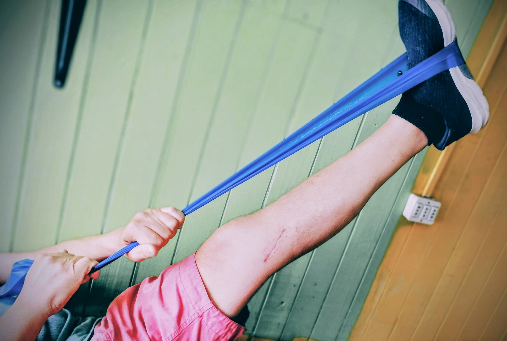
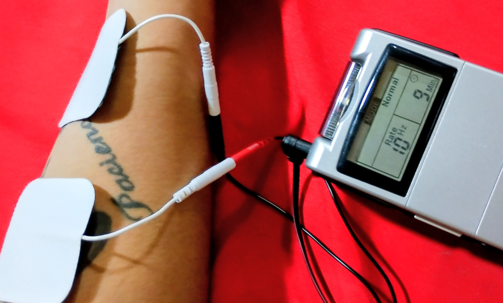
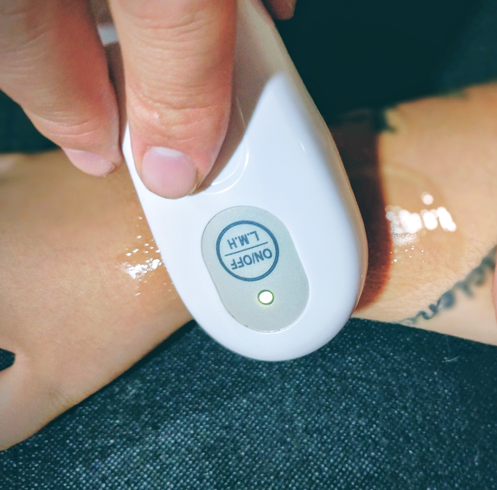
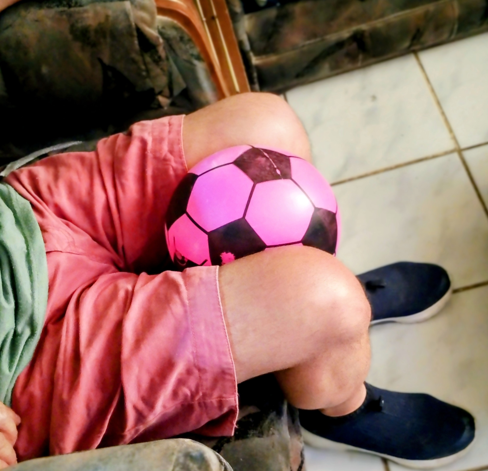
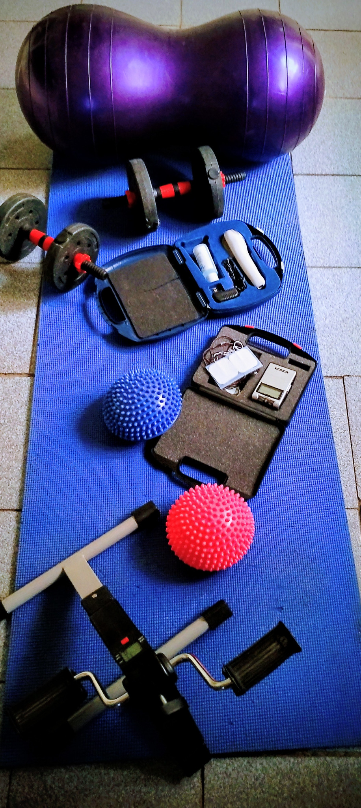
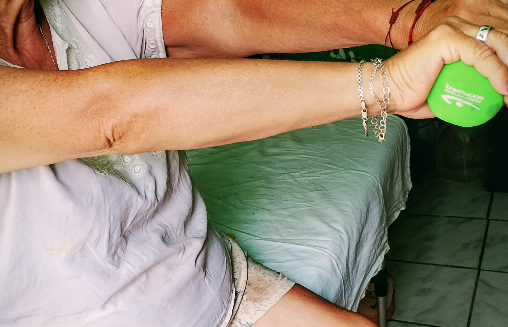
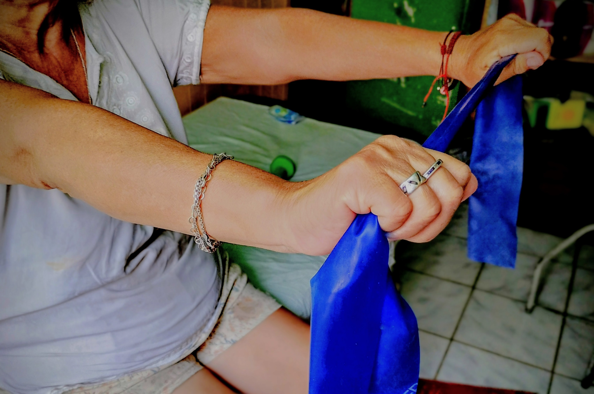
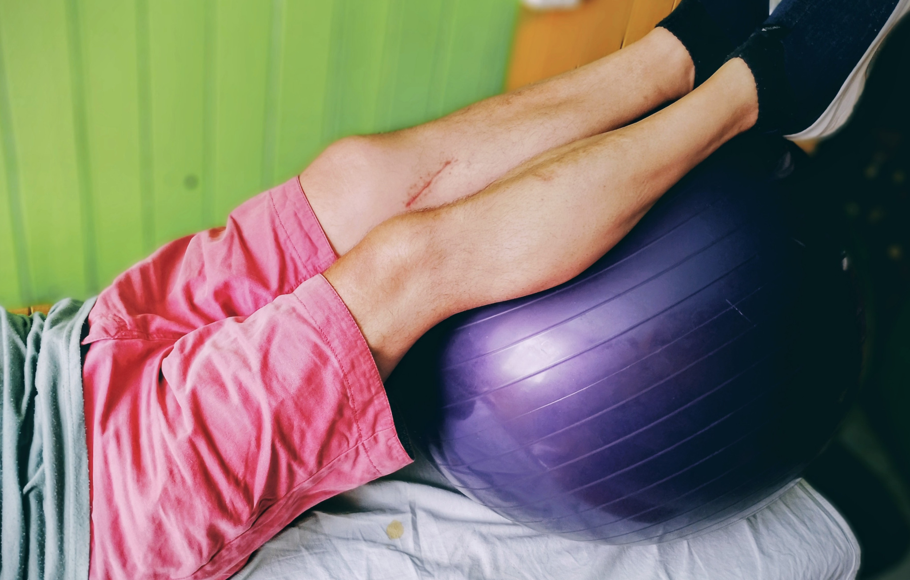

Rehabilitación cómoda, funcional y adaptada al entorno real del paciente.
Kinesiología a domicilio en Santiago
Recupera movimiento, función y confianza sin salir de casa.
En StimKine el tratamiento se basa en ejercicio terapéutico, enfoque funcional, educación del paciente y seguimiento cercano para ayudarte a avanzar con seguridad en tu propio hogar.
✓ Atención cercana
✓ Mínimo 60 minutos por sesión
✓ Menos máquina, más movimiento

Trabajo activo para recuperar movilidad, fuerza, equilibrio y autonomía.
Explicación clara, objetivos concretos y acompañamiento por WhatsApp.
Servicios
Un tratamiento pensado para tu realidad
Desde el control del dolor hasta la recuperación funcional, cada sesión busca que avances con seguridad y con objetivos claros.

Electroterapia
Uso de TENS como apoyo en manejo del dolor, activación y complemento del tratamiento funcional.

Ultrasonido terapéutico
Apoyo específico para complementar el abordaje de tejidos blandos dentro de un plan de rehabilitación más amplio.

Ejercicio terapéutico
Base del tratamiento para mejorar fuerza, movilidad, control motor, equilibrio y función.

Rehabilitación domiciliaria
Llevo equipamiento portátil a tu hogar: bandas, mancuernas, balón, pedalera, termoterapia y más según cada caso.
Qué tratamos
Problemas frecuentes que abordamos
Si estás pasando por una lesión, dolor o pérdida de movilidad, el tratamiento se adapta a tu condición clínica y a tus objetivos funcionales.
- Dolor lumbar y hernia lumbar.
- Esguinces de tobillo y rehabilitación de tobillo.
- Dolor de hombro y lesiones de manguito rotador.
- Tendinitis y lesiones por sobrecarga.
- Postoperatorios de miembros inferiores.
- Rehabilitación funcional en adultos mayores.
También se evalúan otros cuadros musculoesqueléticos y funcionales según necesidad. El objetivo no es solo bajar el dolor, sino ayudarte a recuperar movimiento, seguridad y capacidad para tu vida diaria.
Zonas de atención
Kinesiología a domicilio en distintas comunas de Santiago
StimKine realiza atención kinésica domiciliaria en diferentes sectores de Santiago, priorizando zonas donde ya existe experiencia de trabajo en terreno.
Atención frecuente en comunas como El Bosque, San Bernardo, San Ramón, La Cisterna, La Granja, San Joaquín, Lo Espejo, San Miguel, La Florida, Ñuñoa y Providencia.
Si estás en otra comuna de Santiago, puedes consultar disponibilidad por WhatsApp.
Cómo es una sesión
Evaluación, tratamiento y seguimiento
La atención se adapta a tu estado actual, tu dolor, tu movilidad y tus metas. Cada sesión busca que entiendas tu proceso y avances con claridad.
Por qué elegir StimKine
Cercanía, claridad y trabajo funcional
StimKine nace para entregar una rehabilitación más humana y ordenada: con objetivos claros, explicaciones simples y un plan de trabajo que se adapta al hogar del paciente.
- Enfoque en ejercicio terapéutico y recuperación funcional.
- Menos máquina, más movimiento con sentido clínico.
- Atención cercana, explicación clara y educación del paciente.
- Seguimiento por WhatsApp para acompañar el proceso.
- Sesiones de mínimo 60 minutos, pudiendo extenderse según necesidad.
Trabajo real
Rehabilitación con herramientas concretas
Estas imágenes muestran parte del enfoque de trabajo de StimKine: cercano, funcional y aplicado a la vida diaria.



Tecnología desarrollada por StimKine
EvalKine: gestión clínica y seguimiento terapéutico
Además de la atención domiciliaria, StimKine impulsa EvalKine, una plataforma creada para organizar pacientes, sesiones, tareas, informes, certificados y seguimiento terapéutico en un solo lugar.
- Registro y seguimiento de pacientes.
- Informes y certificados exportables.
- Biblioteca de ejercicios y tareas.
- Acceso para pacientes y apoyo con IA clínica.
Opiniones reales
Lo que dicen mis pacientes
La confianza se construye con resultados, cercanía y constancia.
★★★★★
“Excelente servicio, claro y eficiente para apoyar al paciente. Súper recomendable.”
Claudia Rojas★★★★★
“Excelente como profesional y persona, he tenido buena evolución y experiencia durante casi 10 años con mi kinesiólogo.”
Elizabeth Venegas★★★★★
“Excelente profesional, me alivió el dolor del hombro, vino a mi domicilio y con valores accesibles.”
outletcatalina★★★★★
“Excelente profesional, puntual, responsable y con atención domiciliaria.”
Carla Saez
Conversemos
Agenda tu evaluación y empecemos a avanzar
Si estás buscando una atención kinésica cercana, clara y enfocada en recuperar función, escríbeme directamente por WhatsApp.
WhatsApp: +56 9 8933 1095
Correo: stimkine@gmail.com
Servicio: Atención domiciliaria y rehabilitación personalizada
Duración: Sesiones de 60 a 90 minutos según necesidad
Equipamiento: Bandas, mancuernas, balón, pedalera, TENS, ultrasonido y termoterapia
Kinesiología a domicilio en Santiago
Atención kinésica funcional en tu hogar
En StimKine Movimiento y Salud ofrecemos kinesiología a domicilio en Santiago, con un enfoque centrado en la rehabilitación funcional, el ejercicio terapéutico y la recuperación segura dentro del hogar del paciente.
Atendemos personas con distintas condiciones musculoesqueléticas como esguinces de tobillo, dolor lumbar, hernia lumbar, lesiones de hombro, manguito rotador, tendinitis y rehabilitación postoperatoria. También realizamos rehabilitación funcional para adultos mayores y procesos de recuperación progresiva después de lesiones o cirugías.
Si buscas un kinesiólogo a domicilio en Santiago, puedes agendar tu evaluación directamente por WhatsApp y comenzar un tratamiento profesional, personalizado y adaptado a tu realidad.
Nuestro servicio de rehabilitación domiciliaria en Santiago está disponible en distintas comunas, especialmente en San Bernardo, San Miguel, La Florida, San Joaquín, San Ramón, El Bosque, La Cisterna, Lo Espejo, Ñuñoa y Providencia.
El objetivo de StimKine es entregar una atención clara, cercana y funcional, ayudando a cada persona a recuperar movimiento, autonomía y confianza sin salir de casa.
- Kinesiología a domicilio en Santiago.
- Rehabilitación musculoesquelética y funcional.
- Ejercicio terapéutico y manejo del dolor.
- Atención en comunas clave de Santiago.
- Seguimiento cercano y contacto directo por WhatsApp.